RoboCerebra R3: grasp and lift, all 25 classes
One pick of each object class (pick <instance>, seed 0, 150-step budget, OSC_POSE), planned by the HPP segment policy.
Recorded verdicts are from results/2026-10-26-r3-grasp-lift.json: 14 picked, 4 held but unregistrable, 7 failed.
The frames come from a rerun of the same protocol with rendering on; where its verdict differs from the recorded one, the card says so.
Picked by the checker 14
akita_black_bowl
Picked| verdict | lifted | rotation | steps | |
|---|---|---|---|---|
| recorded (2026-10-26) | Picked | 0.061 m | 0.0221 | 67 |
| this rerun | Picked | 0.061 m | 0.0221 | 67 |
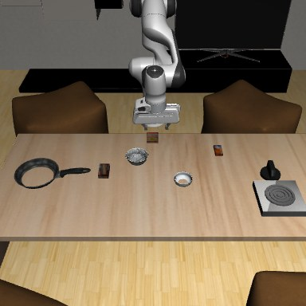
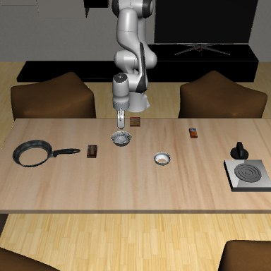
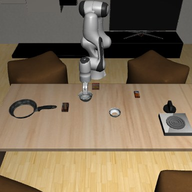
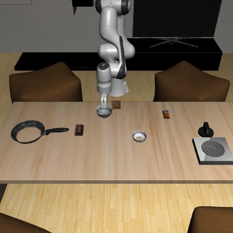
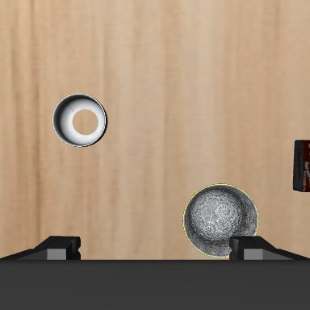
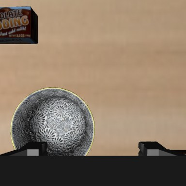
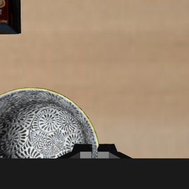
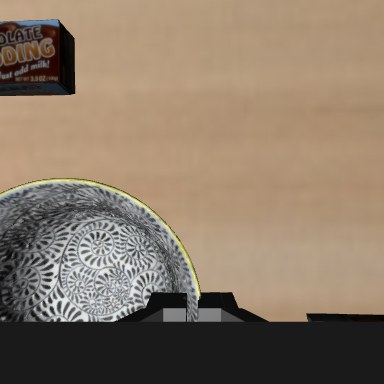
alphabet_soup
Picked| verdict | lifted | rotation | steps | |
|---|---|---|---|---|
| recorded (2026-10-26) | Picked | 0.023 m | 0.0645 | 79 |
| this rerun | Picked | 0.023 m | 0.0645 | 79 |

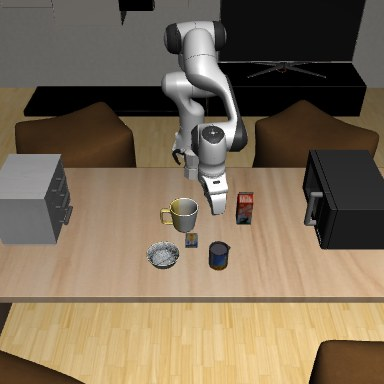
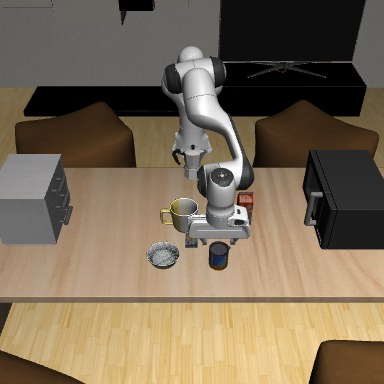

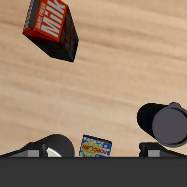
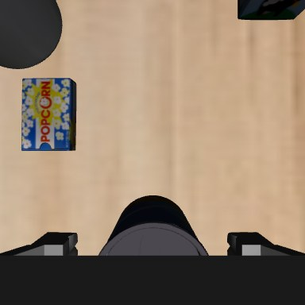
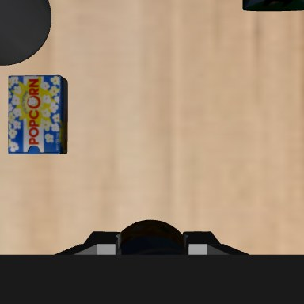
bbq_sauce
Picked| verdict | lifted | rotation | steps | |
|---|---|---|---|---|
| recorded (2026-10-26) | Picked | -0.0016 m | 0.0033 | 42 |
| this rerun | Picked | -0.0016 m | 0.0033 | 42 |

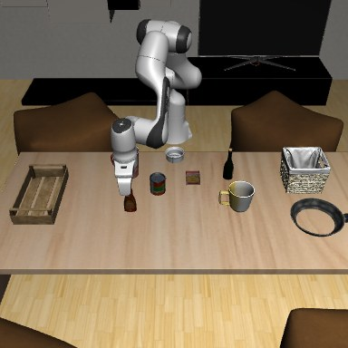
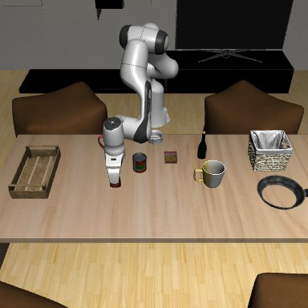

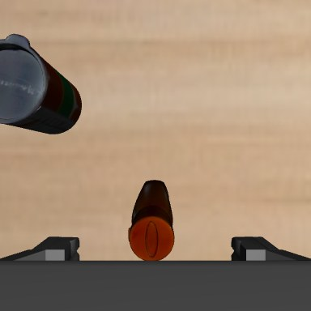
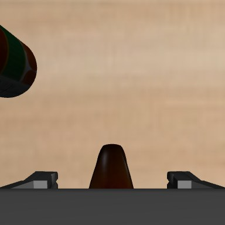
butter
Picked| verdict | lifted | rotation | steps | |
|---|---|---|---|---|
| recorded (2026-10-26) | Picked | 0.0444 m | 0.0177 | 78 |
| this rerun | Picked | 0.0444 m | 0.0177 | 78 |

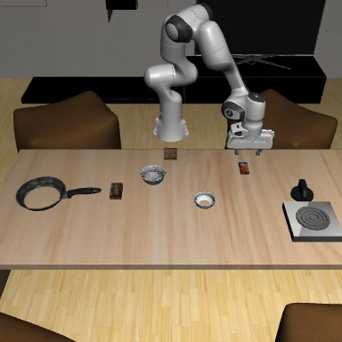
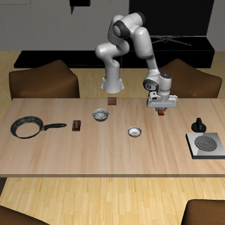
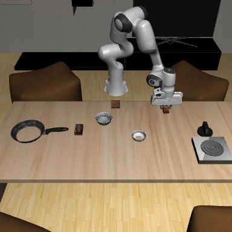

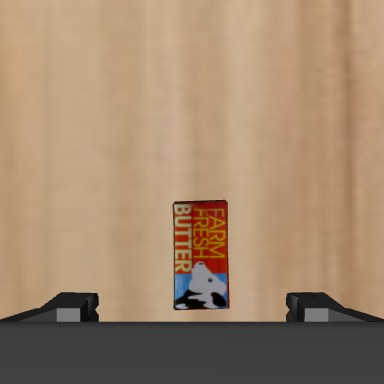
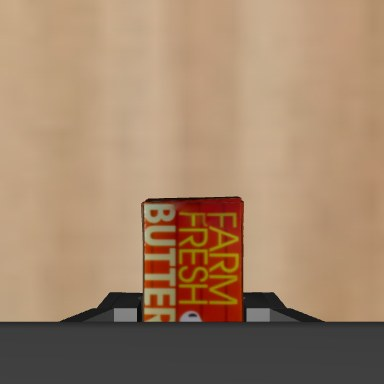
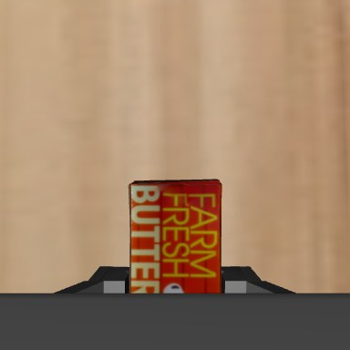
chefmate_8_frypan
Picked| verdict | lifted | rotation | steps | |
|---|---|---|---|---|
| recorded (2026-10-26) | Picked | 0.0542 m | 0.0278 | 75 |
| this rerun | Picked | 0.0542 m | 0.0278 | 75 |
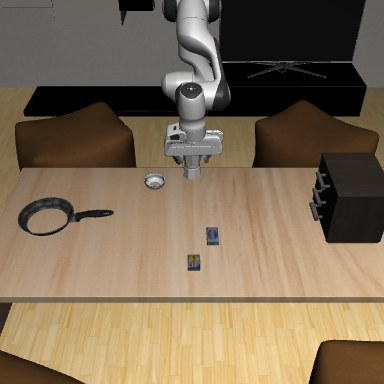
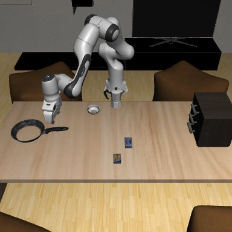
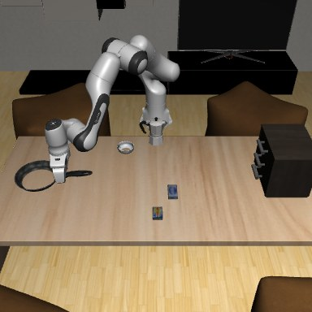
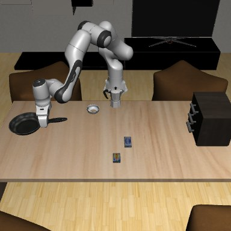
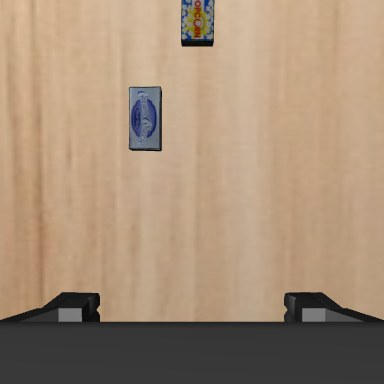
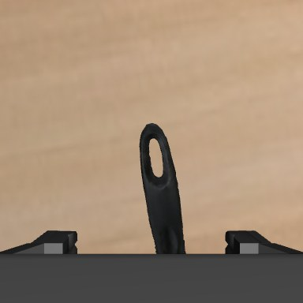
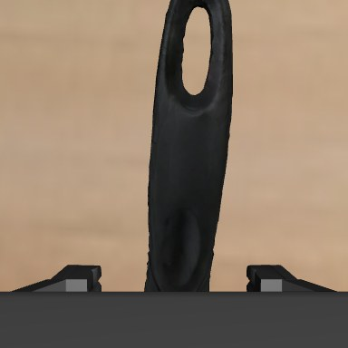
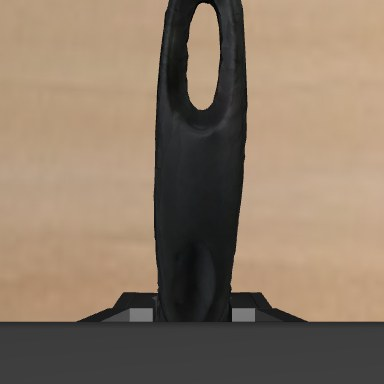
chocolate_pudding
Picked| verdict | lifted | rotation | steps | |
|---|---|---|---|---|
| recorded (2026-10-26) | Picked | 0.0377 m | 0.0152 | 107 |
| this rerun | Picked | 0.0377 m | 0.0152 | 107 |
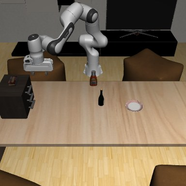
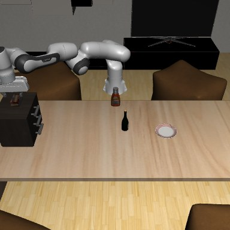
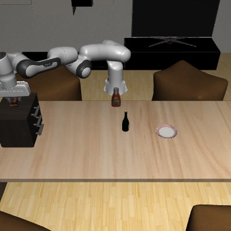

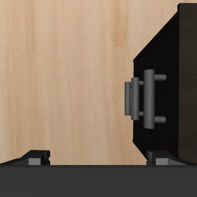
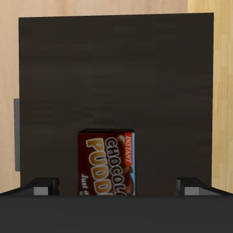
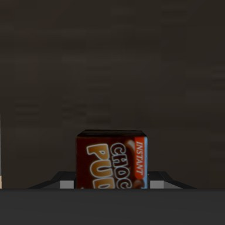
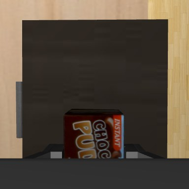
cookies
Picked| verdict | lifted | rotation | steps | |
|---|---|---|---|---|
| recorded (2026-10-26) | Picked | 0.0451 m | 0.002 | 42 |
| this rerun | Picked | 0.0451 m | 0.002 | 42 |
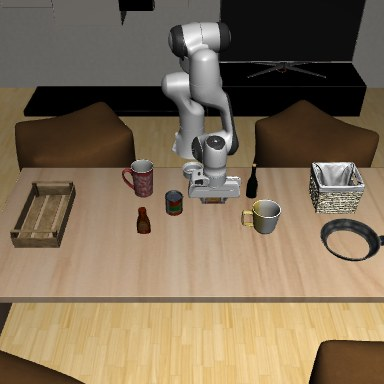
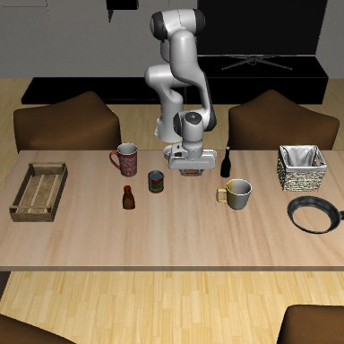

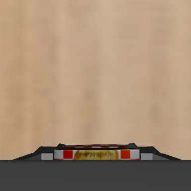
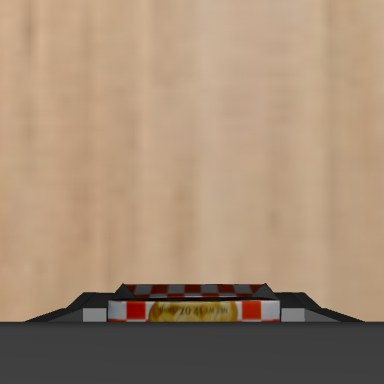
cream_cheese
Picked| verdict | lifted | rotation | steps | |
|---|---|---|---|---|
| recorded (2026-10-26) | Picked | 0.0493 m | 0.0201 | 69 |
| this rerun | Picked | 0.0493 m | 0.0201 | 69 |

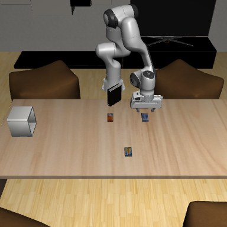
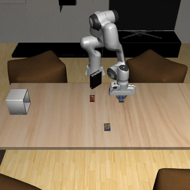
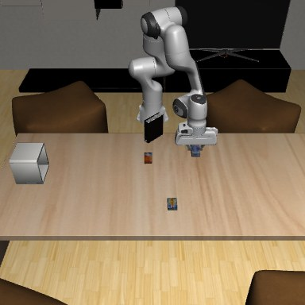
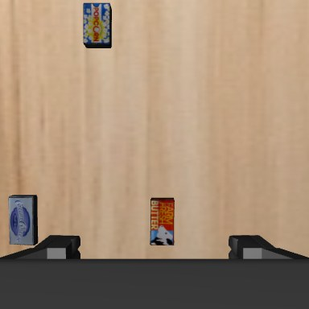
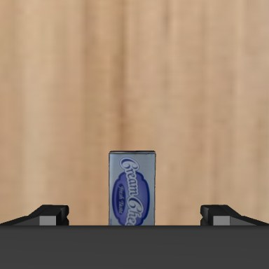
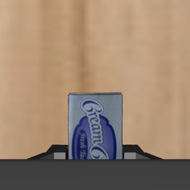
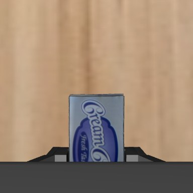
popcorn
Picked| verdict | lifted | rotation | steps | |
|---|---|---|---|---|
| recorded (2026-10-26) | Picked | 0.0454 m | 0.005 | 48 |
| this rerun | Picked | 0.0454 m | 0.005 | 48 |
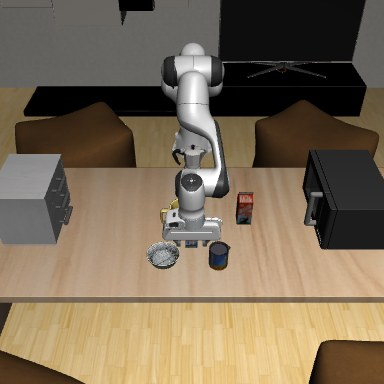
red_coffee_mug
Picked| verdict | lifted | rotation | steps | |
|---|---|---|---|---|
| recorded (2026-10-26) | Picked | 0.0537 m | 0.0157 | 56 |
| this rerun | Picked | 0.0537 m | 0.0157 | 56 |


tomato_sauce
Picked| verdict | lifted | rotation | steps | |
|---|---|---|---|---|
| recorded (2026-10-26) | Picked | 0.0216 m | 0.0332 | 80 |
| this rerun | Picked | 0.0216 m | 0.0332 | 80 |


white_yellow_mug
Picked| verdict | lifted | rotation | steps | |
|---|---|---|---|---|
| recorded (2026-10-26) | Picked | 0.0617 m | 0.006 | 50 |
| this rerun | Picked | 0.0617 m | 0.006 | 50 |


wine_bottle
Picked| verdict | lifted | rotation | steps | |
|---|---|---|---|---|
| recorded (2026-10-26) | Picked | 0.0611 m | 0.0053 | 58 |
| this rerun | Picked | 0.0611 m | 0.0053 | 58 |


wooden_tray
Picked| verdict | lifted | rotation | steps | |
|---|---|---|---|---|
| recorded (2026-10-26) | Picked | 0.0593 m | 0.0067 | 77 |
| this rerun | Picked | 0.0593 m | 0.0067 | 77 |


Held, but the checker can't register it 4
basket
Held, unregistrableCarries its own contain region
| verdict | lifted | rotation | steps | |
|---|---|---|---|---|
| recorded (2026-10-26) | Held, unregistrable | 0.0913 m | 0.0327 | 150 |
| this rerun | Held, unregistrable | 0.0913 m | 0.0327 | 150 |


ketchup
Held, unregistrableStarts in no region (origin above the table band)
| verdict | lifted | rotation | steps | |
|---|---|---|---|---|
| recorded (2026-10-26) | Held, unregistrable | 0.1021 m | 0.0337 | 150 |
| this rerun | Held, unregistrable | 0.1021 m | 0.0337 | 150 |


milk
Held, unregistrableStarts in no region (origin above the table band)
| verdict | lifted | rotation | steps | |
|---|---|---|---|---|
| recorded (2026-10-26) | Held, unregistrable | 0.1017 m | 0.0055 | 150 |
| this rerun | Held, unregistrable | 0.1017 m | 0.0055 | 150 |


orange_juice
Held, unregistrableStarts in no region (origin above the table band)
| verdict | lifted | rotation | steps | |
|---|---|---|---|---|
| recorded (2026-10-26) | Held, unregistrable | 0.1003 m | 0.0064 | 150 |
| this rerun | Held, unregistrable | 0.1003 m | 0.0064 | 150 |
Failed 7
black_book
FailedNo handle plans in the scene
| verdict | lifted | rotation | steps | |
|---|---|---|---|---|
| recorded (2026-10-26) | Failed | 0.0 m | 0.0 | 150 |
| this rerun | Failed | 0.0 m | 0.0 | 150 |

glazed_rim_porcelain_ramekin
FailedEvery grasp needs a joint at its limit under OSC_POSE (20 cm in front of the base)
| verdict | lifted | rotation | steps | |
|---|---|---|---|---|
| recorded (2026-10-26) | Failed | 0.0 m | 0.0 | 150 |
| this rerun | Failed | 0.0 m | 0.0 | 150 |

macaroni_and_cheese
FailedEvery grasp needs a joint at its limit under OSC_POSE (20 cm in front of the base); knocked over
| verdict | lifted | rotation | steps | |
|---|---|---|---|---|
| recorded (2026-10-26) | Failed | -0.424 m | 1.4142 | 150 |
| this rerun | Failed | -0.424 m | 1.4142 | 150 |
moka_pot
FailedGrasped, lift does not plan (q_target=None); also unregistrable
| verdict | lifted | rotation | steps | |
|---|---|---|---|---|
| recorded (2026-10-26) | Failed | 0.0 m | 0.0 | 150 |
| this rerun | Failed | 0.0 m | 0.0 | 150 |


plate
FailedNo handle plans in the scene (near-flat rim; a top pinch puts the hand in the table)
| verdict | lifted | rotation | steps | |
|---|---|---|---|---|
| recorded (2026-10-26) | Failed | 0.0 m | 0.0 | 150 |
| this rerun | Failed | 0.0 m | 0.0 | 150 |

rack
FailedNo handle plans in the scene
| verdict | lifted | rotation | steps | |
|---|---|---|---|---|
| recorded (2026-10-26) | Failed | 0.0 m | 0.0 | 150 |
| this rerun | Failed | 0.0 m | 0.0 | 150 |
white_bowl
FailedFingers close on air just short of the rim (see the wrist frames); the bowl never moves. At Ideal/case4 it lifted 10.7 cm but tilted 0.25 > 0.1
| verdict | lifted | rotation | steps | |
|---|---|---|---|---|
| recorded (2026-10-26) | Failed | 0.0 m | 0.0 | 150 |
| this rerun | Failed | 0.0 m | 0.0 | 150 |